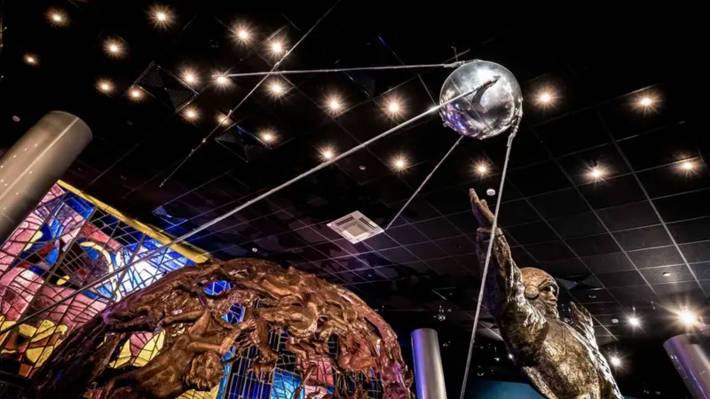
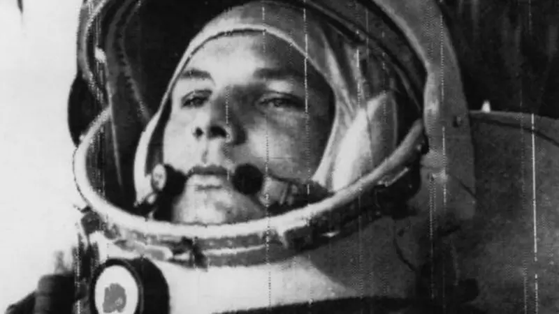
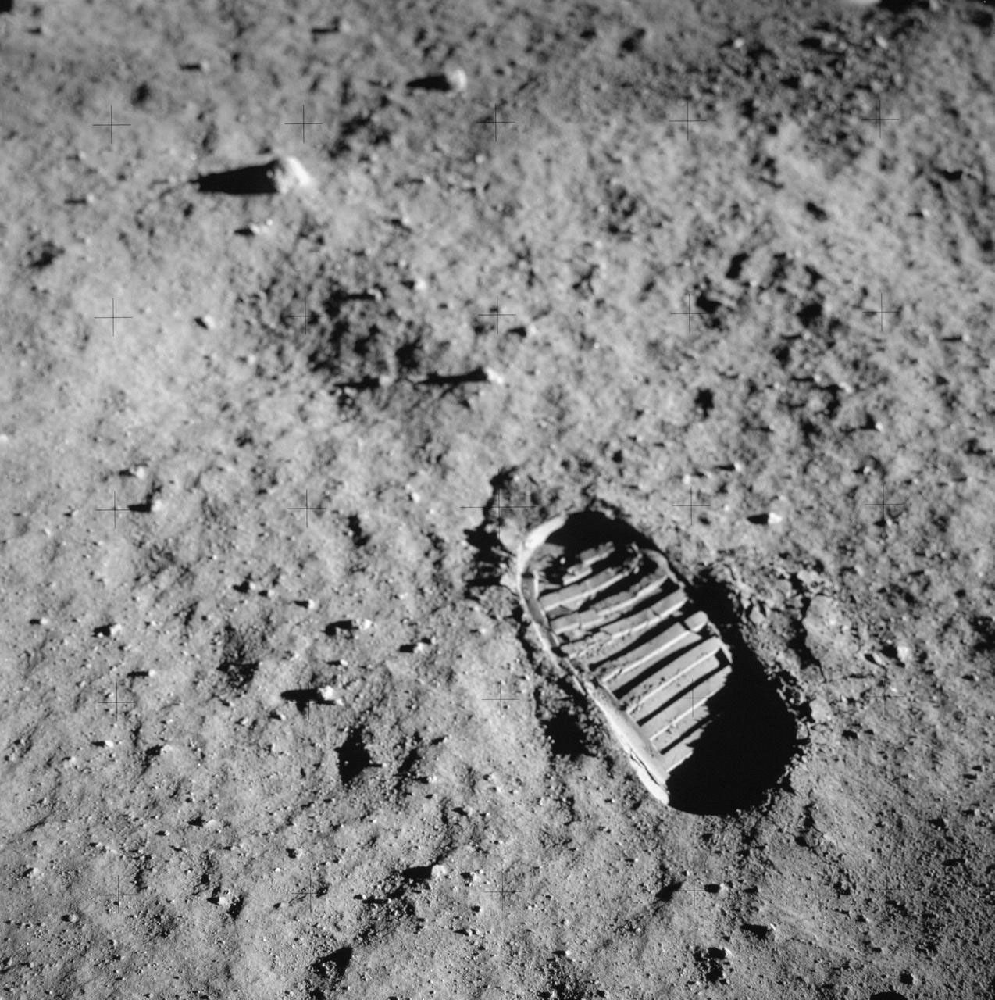
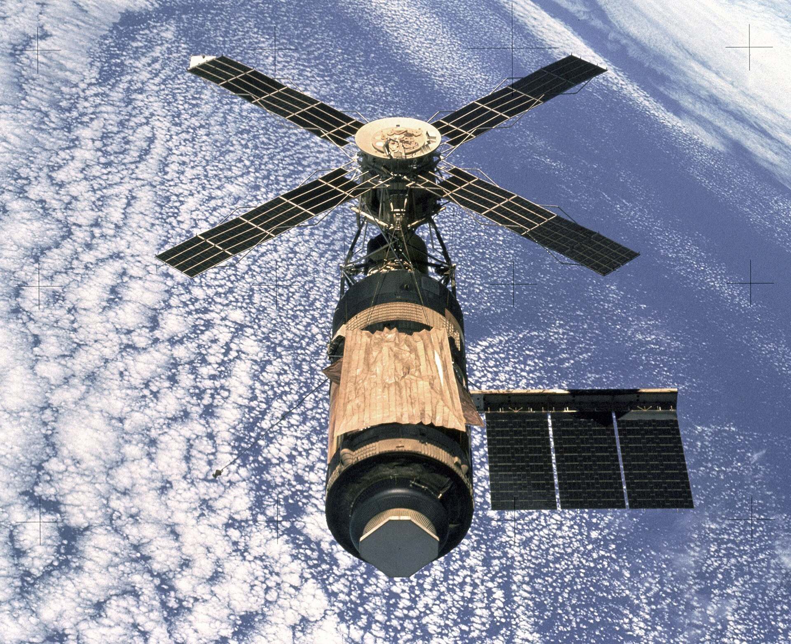
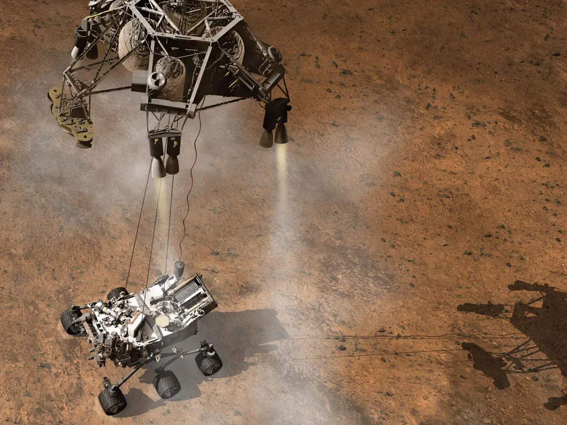
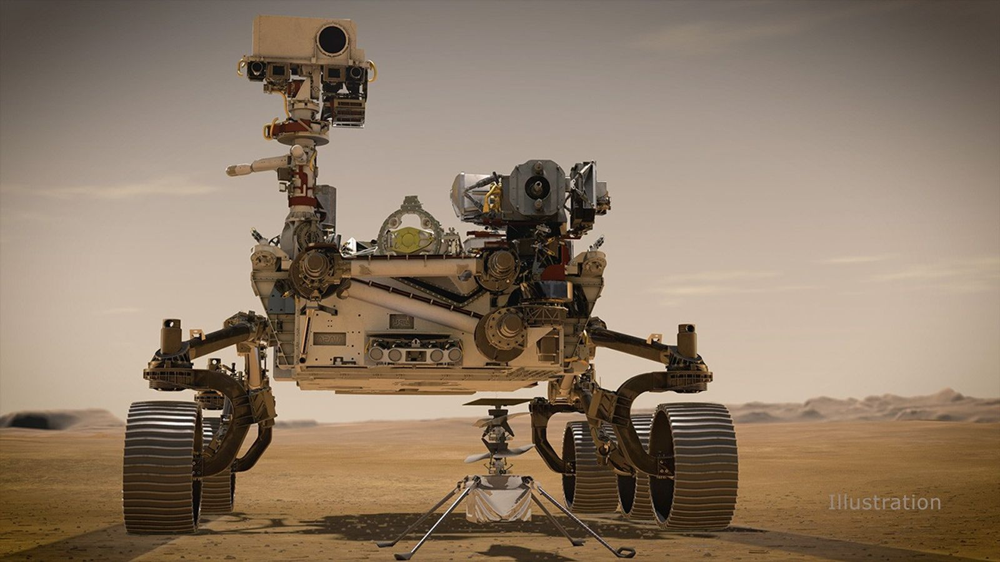
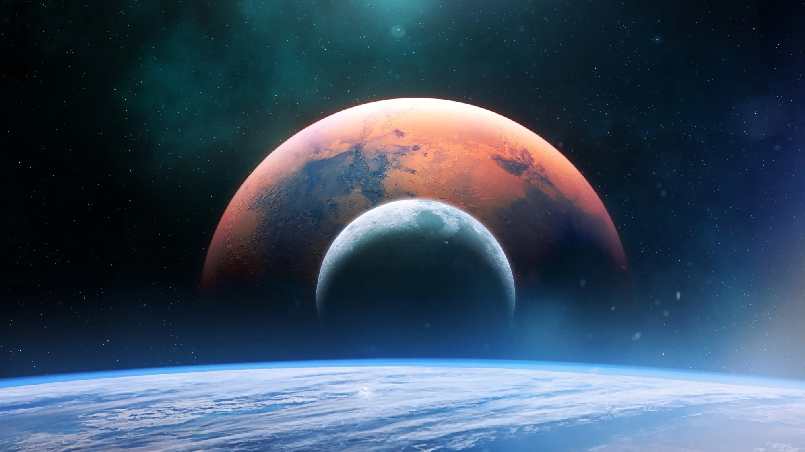

Six decades of firsts
Scroll to travel through the milestones that took us from the edge of the atmosphere to the surface of other worlds(Image credit: NASA). (Verify dates and add your own entries / images.)
The Soviet Union launches the first artificial satellite, opening the space race(Image credit: NASA).

Yuri Gagarin orbits the Earth aboard Vostok 1 — the first person to leave the planet(Image credit: NASA).

Neil Armstrong and Buzz Aldrin become the first humans to walk on the lunar surface(Image credit: NASA).

Construction of humanity's orbiting laboratory begins; it has been continuously inhabited since 2000(Image credit: NASA).

NASA's car-sized rover touches down in Gale Crater to study the planet's habitability(Image credit: NASA).

A new rover lands on Mars carrying Ingenuity — the first aircraft to fly on another planet(Image credit: NASA).

Crewed programmes aim to establish a sustained presence on the Moon and send the first humans to Mars(Image credit: NASA).
